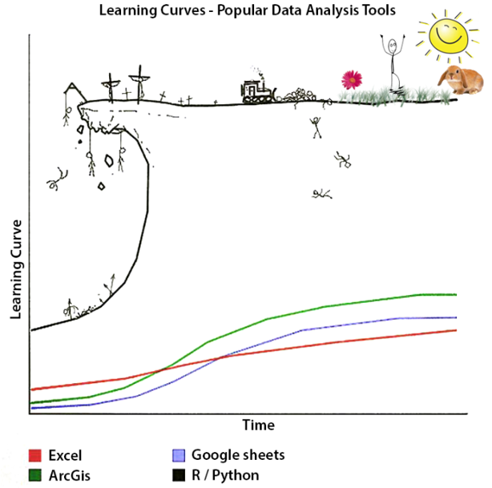
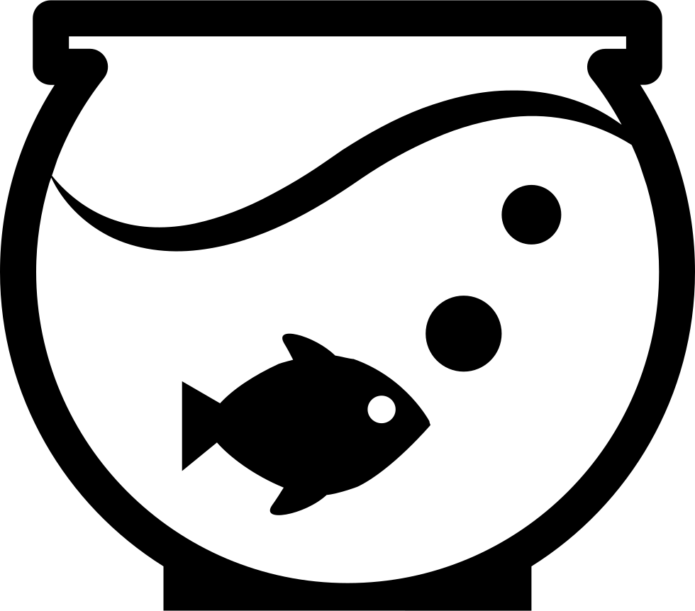

4 Lowering barriers to inclusion and addressing key critiques
4.1 Lesson Outline
4.2 Goals and motivation
We finish our workshop with a discussion of what it means to use open science in the real world. It’s great to talk about the value of open science and the tools you can use, but it’s a completely different ball game when it comes to putting these ideas into practice. Our goal is that you leave this workshop an advocate and early adopter for the ideas we discussed today - spread these ideas to your peers and colleagues! To realistically achieve this goal, we will talk about some of the challenges you will face so you can develop a realistic expectation of what’s to come.
- Goal: Understand common hurdles in adopting open science and how to overcome them
- Motivation: Become the “open science” expert at your institution!
4.3 Learning curves

Challenge
It’s hard to learn new tools!
Solution
It’s an investment, look to the community!
You’ve probably seen a graphic like this if you’ve ever taken a course in R or Python. The hope is that you’re able to quickly reach the land of sunshine and bunnies, but the path is treacherous and even insurmountable for some.
A huge obstacle in using open science is that the toolsets can have steep learning curves. More popular platforms, such as Excel, are used by many because they’re simple and intuitive. However, as noted earlier, FAIR workflows and tools are sacrificed for ease of use.
Although it’s true that adopting new tools will slow forward progress, this is only temporary. Consider your path towards learning new platforms an investment in your future. The immediate benefit may not be apparent, but you’ll soon wonder how you ever got by before.
It’s also helpful to think about the broader community that can support you along this journey. Learning alone can be discouraging and we strongly recommend that you tap into the diverse community of educators, mentors, bloggers, and friends that can help. Even you can create a community of practice!

Exercise and discussion
How can you engage your peers to develop a shared workspace to learn new tools? What tools will you learn?
4.4 Fear of exposure

Challenge
Being open makes me nervous!
Solution
Being open helps you collaborate, increases competitiveness, and creates a better scientific product!
Practicing open science can feel like science in a fish bowl. Although this is kind of the goal, many view this transparency as a liability. Many fear having their ideas “scooped” or losing credibility because of greater exposure of mistakes. These are real concerns that require consideration when working towards more open workflows.
In conventional academic settings, competition for resources (e.g., via grant funding) is a real issue and being open can be seen as a risk to the competitive edge. We cannot dismiss this fact, but rather we can think about a lack of openness as a hindrance to forward progress and stifled creativity.
Think about being open as a means to finding your next collaborator. Creating FAIR data opens the door for others to engage with your science. In fact, being open can increase the competitiveness of research proposals by building a stronger team that collaborates and shares data through better workflows.
First time practitioners of open science also worry about the risk of “airing their dirty laundry”. By exposing the process and potential mistakes, many worry that their integrity as scientists may be questioned.
These fears are unfounded as the scientific process by definition is iterative. Hypotheses are supported or refuted through trial and error - if you’re getting your answer after one pass, you’re probably not doing it right. Making the process more transparent can help build trust as your collaborators can better appreciate how decisions and conclusions were made.
Mistakes in research are also very common, much more so than many people realize. By being open, it is true that mistakes are more visible, but this also provides a mechanism for fixing. Being open can lead to a better product by simply having more eyes on the process. It also helps normalize mistakes as part of the process - perfection is an unrealistic expectation.
Exercise and discussion
What are your personal concerns about adopting open science?
4.5 What does it mean to be open?
Challenge
People and institutions define open differently!
Solution
Understand the context and demonstrate the value!
Also realize that open science can mean different things to different people. By extension, this also applies to institutions. We presented the five schools of open science to help conceptualize ideas and tools when we discuss what it means to different groups.
Think about your employer and what they might care about if you advocate for adoption of open science. Do you need to convince them that there is value in being open? What is their value proposition? What are the hurdles to achieving openness at your institution?
For many institutions, being open may come with IT hurdles as you push for alternative software platforms. Working with IT staff to develop trust and comfort for new software may be your burden, but as always, it’s an investment in the future.
Maybe there are legal contexts to being open. For example, Florida has the “Sunshine” law that makes all government communications public record. What does this mean for using new workflows in open science? Is this is an improvement or a liability (see previous section)?
If you’re an administrator or manager, maybe you’re the one that makes the call about being open. It’s important for you to create a culture that promotes and supports open science. Allow space and time for your staff to learn new skills. Realize that investing time in open science is an investment in the future.
Exercise and discussion
What does being open mean to you? What do you think being open means to your employer?
4.6 Something is better than nothing
Challenge
Doing all the things is impossible!
Solution
Start small, incremental progress is the name of the game!
First time open science enthusiasts can be overwhelmed by the apparent need to check all the boxes on the open science list. There’s often a prevailing sentiment that you’re not doing open science unless you do all the things. This is simply not true. Just remember that doing something is a huge improvement over doing nothing.
Openness in science exists on a spectrum. Your goal should be incremental movement away from the completely closed end of the spectrum. Perhaps you set a goal of only accomplishing one open science task for a particular project. Maybe you start by developing a simple metadata text file or developing a data dictionary. Or maybe you make a commitment to try a new communication platform for collaborative engagement.
Channeling this concept, Wilson et al. (2017) discuss “good enough practices” in scientific computing, acknowledging that very few of us are professionally trained in these disciplines and sometimes “good enough” is all we can ask for. Lowenberg et al. (2021) also advocate for simple adoption, rather than perfection, when it comes to data citation practices.
So, be kind to yourself when learning new skills and realize that the first step will likely be frustration, but through frustration comes experience. The more comfortable you become with a new task, the more likely you’ll be able to attempt additional tasks in the future.
Exercise and discussion
What are some simple things you can do to begin adopting open science?
References
Lowenberg, Daniella, Rachael Lammey, Matthew B Jones, John Chodacki, and Martin Fenner. 2021. “Data Citation: Let’s Choose Adoption over Perfection.” Zenodo. https://doi.org/10.5281/zenodo.4701079.
Wilson, G., J. Bryan, K. Cranston, J. Kitzes, L. Nederbragt, and T. K. Teal. 2017. “Good Enough Practices in Scientific Computing.” PLoS Computational Biology 13 (6): e1005510. https://doi.org/10.1371/journal.pcbi.1005510.